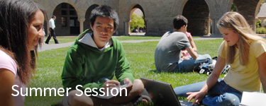
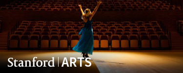
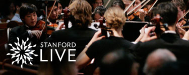

University News
Subscribe to News RSS feed'Bots at play
Students in the Experimental Robotics course put their creations through their paces.
Business of genetics
Stanford expert Jake Sherkow takes a closer look at the Supreme Court's decision on gene patenting.
More Stories
At Stanford

Spend summer quarter at Stanford.

Learn about the wide range of arts programs at Stanford.

Inaugural season at the Bing Concert Hall.
Stay Connected